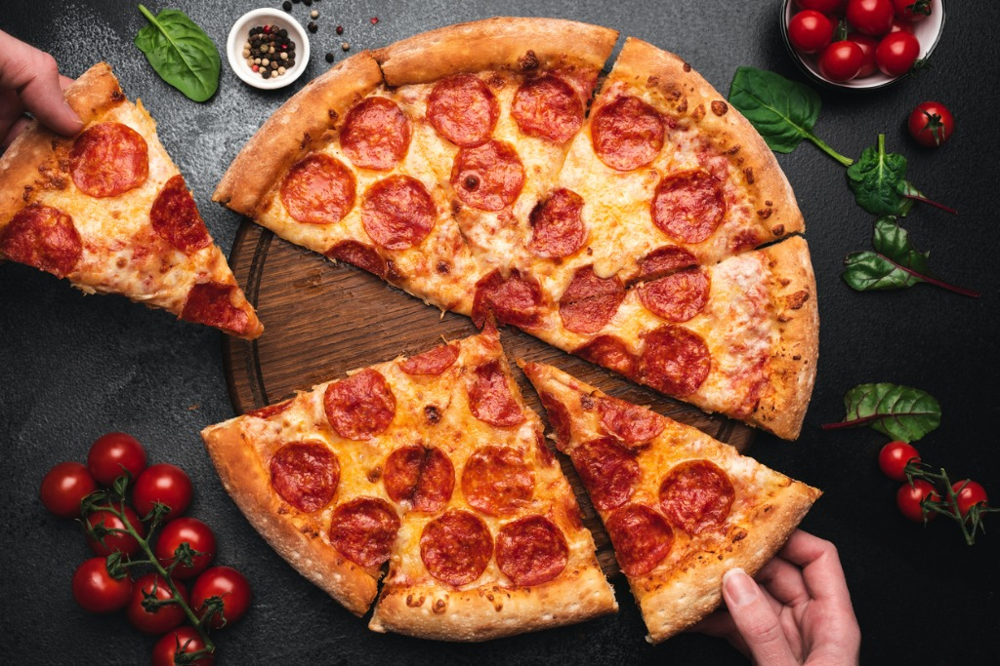

Pepperoni Pizza
pizza, dish of Italian origin consisting of a flattened disk of bread dough topped with some combination of olive oil, oregano, tomato, olives, mozzarella or other cheese,
Ingredients
- 3 ¼ cups all-purpose flour, or more as needed
- 1 tablespoon sugar
- 1 ½ teaspoons salt
- 1 ⅓ cups very warm water (120 degrees F to 130 degrees
- ⅓ cup oil
- mozzarella cheese
- pepperoni
Steps
- Preheat oven to 500°F. If you are using a pizza stone, preheat it in the oven for at least 20 minutes so it is nice and hot as well.
- Transfer the dough to a lightly dusted pizza peel. Alternatively, fit it into a large cast-iron.
Add sauce in a light layer all over the pizza, leaving about 1/4-inch crust around the edges. Chop half of the pepperoni and sprinkle it over the sauce. Top the pizza with grated cheese and the rest of the pepperoni. Season with black pepper.
- If you're using a pizza stone, carefully slide pizza into the center of the preheated pizza stone. Cook for 6 minutes, then rotate the pizza halfway so it cooks evenly. Cook for another 6-8 minutes, or until the crust is golden brown and charred in spots.
- Use pizza peel to slide pizza out onto a cutting board. Let the pizza rest for a minute and slice into pieces. Season with fresh oregano (optional). Serve while warm with a side salad.